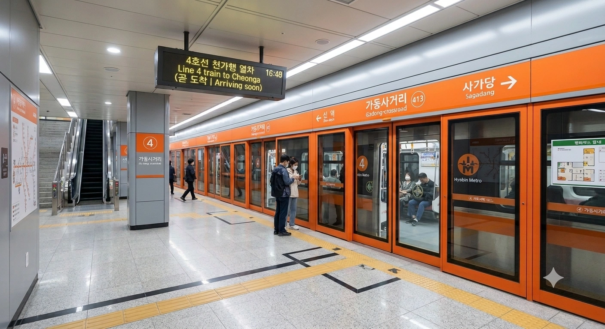
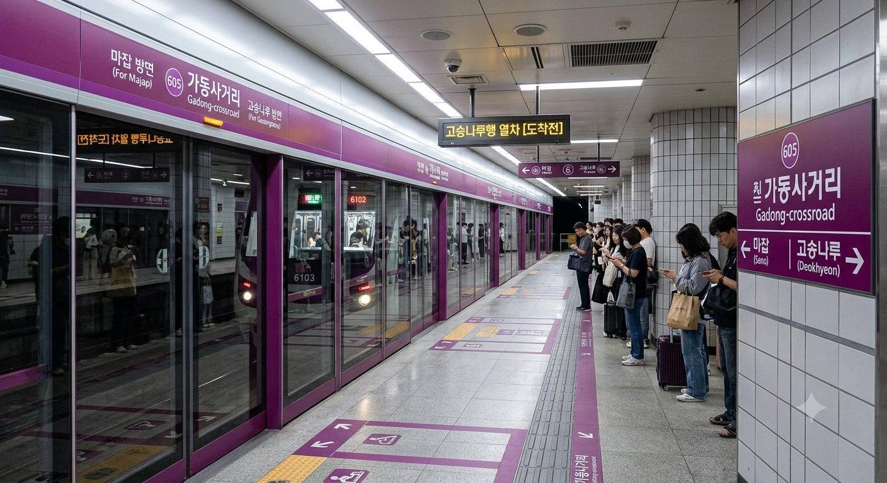

가동사거리역
1. 개요
 효빈 도시철도 4호선 413번 및
효빈 도시철도 4호선 413번 및  효빈 도시철도 6호선 605번. 효빈광역시 동구 사가당동 37지하 소재이다.
효빈 도시철도 6호선 605번. 효빈광역시 동구 사가당동 37지하 소재이다.
2. 역 정보
효빈광역시 동구 사가당동에 위치한 4호선과 6호선의 환승역이다. 역 이름은 역이 위치한 교차로인 '가동사거리'에서 유래했다.
4호선(2003년 개통)과 6호선(2016년 개통)이 십자 형태로 교차하는 구조로, 동구의 남북축과 동서축이 만나는 교통의 요지이다. 지상에는 교통량이 상당히 많은 가동사거리가 있으며, 출퇴근 시간에는 도로 교통 정체로 인해 지하철을 이용하는 승객이 매우 많다.
3. 역 주변 정보
3.1. 출구 정보
가동사거리역은 환승역의 이점 덕분에 출구별로 주변 아파트 단지와 상업 시설이 고르게 분포되어 있다. 역세권을 따라 주거지와 편의시설이 잘 어우러진 구조를 띠고 있다.
|
가동사거리역 출구 정보
|
||
|---|---|---|
| 번호 | 주요 시설 및 방향 | 비고 |
| 1 | 부선초등학교, 효빈역주공아파트, 사가당주공2단지 (사가당1동 방면) | |
| 2 | 덕현9동행정복지센터, 사가당 푸르지오 1단지, 사가당 롯데아파트 (사가당2동 방면) | |
| 3 | 덕현고등학교, 덕현초등학교, 덕현5동행정복지센터, 효빈역지하상가 진입, 사가당시장, 빈스마트 사가당점 (사가당3동 방면) | |
| 4 | 덕현6동행정복지센터, 매남초등학교, 카린 비즈호텔 효빈 | |
| 5 | 덕현11동행정복지센터, 나공중학교 | |
3.2. 주요 시설 상세
- 카린 비즈호텔 효빈 (2성급 / 4번 출구에서 170m)
- 가동사거리역 인근에서 가장 눈에 띄는 로열 블루(Royal Blue) 외관을 자랑하는 비즈니스 호텔이다. 효빈광역시 명예시민이자 '어뮤즈의 광견'으로 불리는 아사카 카린의 열성 팬인 건물주가 아예 그녀를 테마로 올린 성지 중의 성지로 유명하다.
체크인 시 "선배님 이름 조별과제에서 뺍니다?"라는 환영 멘트가 적힌 카드를 준다 카더라.객실 어메니티부터 호텔 로비 BGM(주로 Starlight가 무한 재생된다)까지 카린의 요소가 듬뿍 담겨 있으며, 특히 4·6호선 환승객과 효빈역을 거쳐 HAF(효빈 애니메이션 페스티벌)에 참가하려는 덕후들의 '베이스캠프'로 악명이 높다.
- 사가당시장 (3번 출구 방면 / 사가당3동)
- 동구 사가당 일대의 유서 깊은 재래시장. 값싸고 푸짐한 분식집과 닭강정집 덕분에 하교하는 덕현고 학생들의 참새 방앗간 역할을 톡톡히 하고 있다.
- 빈스마트 사가당점 (3번 출구에서 416m)
- 퇴근길 가동사거리역을 빠져나온 직장인들이 저녁거리를 쓸어 담아가는 알짜배기 동선에 위치해 있다.
4. 승강장
4호선

4호선 승강장 전경
| 신 덕 ↑ | |||
| 하 | ㅣ | ㅣ | 상 |
| ↓ 사가당 | |||
| 상 |
효빈 도시철도 4호선
|
해운산업지구 방면 |
| 하 |
효빈 도시철도 4호선
|
천가 방면 |
6호선

6호선 승강장 전경
| 사 노 ↑ | |||
| 하 | ㅣ | ㅣ | 상 |
| ↓ 덕 현 | |||
| 상 |
효빈 도시철도 6호선
|
마잡 방면 |
| 하 |
효빈 도시철도 6호선
|
고송나루 방면 |
5. 연계 교통
효빈광역시 시내버스 노선들이 주로 정차한다.
| 구분 | 정류소명 | 노선 번호 |
|---|---|---|
| 순방향 | 가동사거리역 | 6, 26, 151, 193, 371 |
| 역방향 | 가동사거리역(건너편) | 06-1, 62, 511, 913, 731 |
6. 효빈역지하상가
"서브컬처 교통의 요지 가동사거리역과 대한민국 철도 이용객 최상위권 효빈역을 잇는 850m의 거대한 환승 통로"
6.1. 개요 및 구조
- 효빈광역시 동구 사가당동 일대에 위치한 길이 약 850m의 대형 지하도상가. 효빈시설관리공단에서 관리한다.
- 가동사거리역 대합실에서 시작해 효빈역 지하 1층 대합실까지 일직선으로 이어주는 거대한 상권이다.
6.2. 짠돌이 도보 환승러
- 지하철 요금 1회분을 아끼기 위해 4, 6호선을 타고 온 승객들이 굳이 환승을 찍지 않고 이 850m 통로를 경보로 걸어 효빈역에서 KTX를 타는 '짠돌이 루트'로 악명 높다.
다만 캐리어를 끌고 걷기엔 바닥 타일의 홈 때문에 덜덜거리는 소음과 진동이 상당하다.
7. 기타 및 여담
-
'귤색'과 '보라색'의 만남 (세계관의 교차로): 가동사거리역은 효빈 도시철도의 허리를 담당하는 **4호선(주황색/귤색)**과 신흥 강자 **6호선(보라색)**이 만나는 유일한 환승역이다.
- - 4호선(귤색): 안천구와 탄성군 등 주로 **[러브라이브! 선샤인!!]**의 성지들을 남북으로 훑고 올라오는 노선이다.
- - 6호선(보라색): 청엽구와 북구 등 **[BanG Dream!]**의 성지들을 동서로 가로지르는 노선이다.
- 이 때문에 가동사거리역은 서브컬처 팬들 사이에서 **"Aqours(아쿠아)의 세계에서 뱅드림의 세계로 넘어가는 차원문"**이라는 별명으로 불린다.
-
출구 번호 배치의 미스터리: 원래 설계 당시 가동사거리의 동서남북 모서리에 딱 맞게 출구를 낼 계획이었으나, 예전 건물주와의 팽팽한 기싸움 끝에 출구 방향이 살짝 틀어지게 되었다. 덕분에 3번 출구로 나오려던 사람이 길을 잃고 4번 출구 앞 덕현6동행정복지센터로 튀어나오는
공무원 면담 강제 프리패스불상사가 자주 발생한다. - 호텔 앞 '그 포즈' 인증샷 교통체증: 4번 출구 인근에 위치한 '카린 비즈호텔 효빈' 앞은 항상 특정 팬덤으로 북적거린다. 투숙객이 아니더라도 건물 외관을 배경으로 아사카 카린 특유의 요염한(?) 도야가오 포즈를 취하며 인증샷을 남기려는 사람들 때문에 소소한 병목 현상이 발생하기도 한다.